Trusted by

I'm a Product Design Lead with a decade of experience across UX, AI, and SaaS — turning ideas into intuitive products people love and that drive business growth.
From Thai-only product to an international market, rebuilt around the messages people actually needed to send.
Designed a no-code AI chat agent and conversational UX that uses customer context before answering, cites sources, follows policy, stays human-controlled, and speaks in the brand voice — delivering faster resolutions, higher first-contact resolution, and scaled support without new hires.
Digitizing loan registration and management for a market used to paper trails and long waits.
